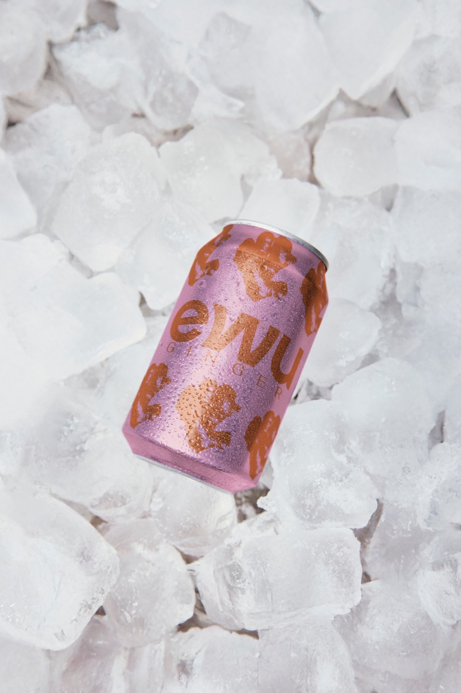
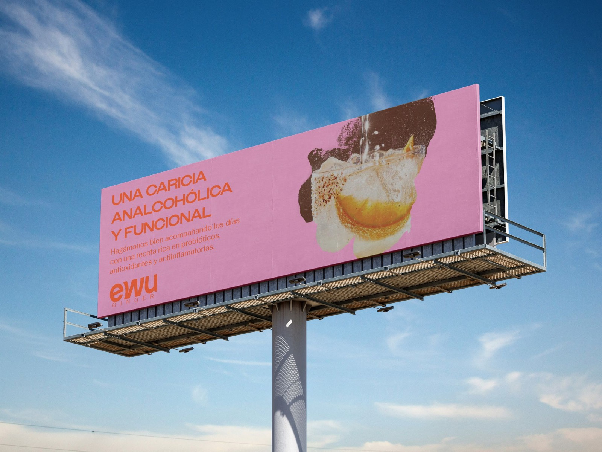
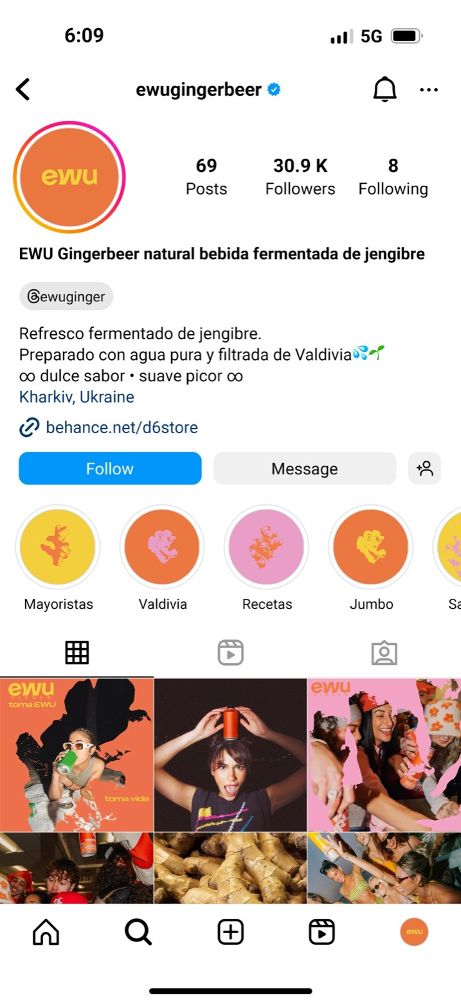
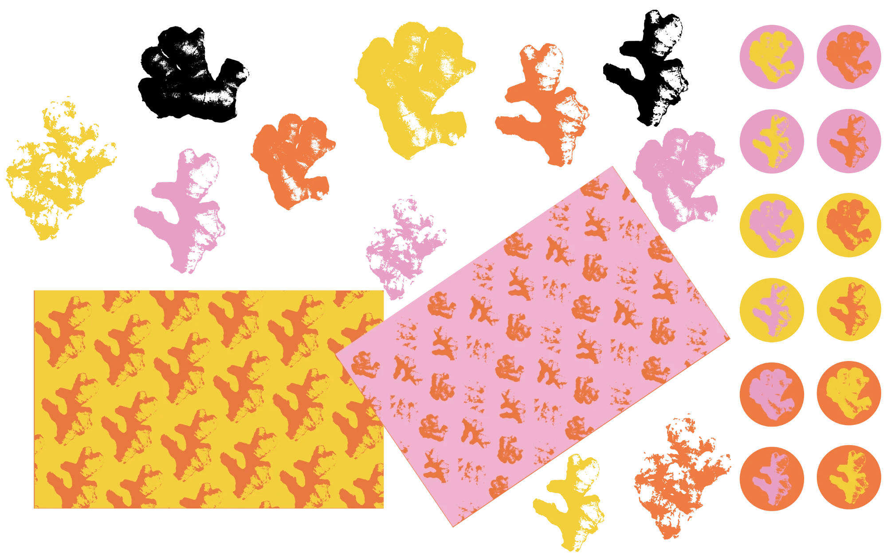
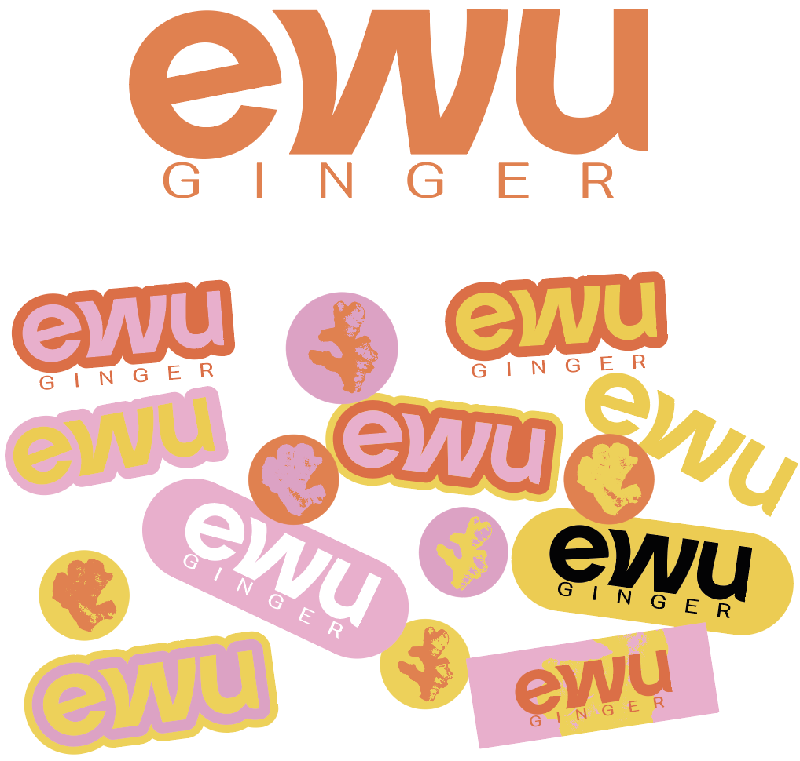
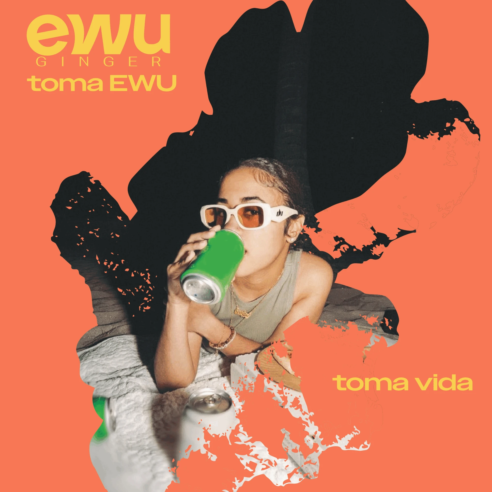
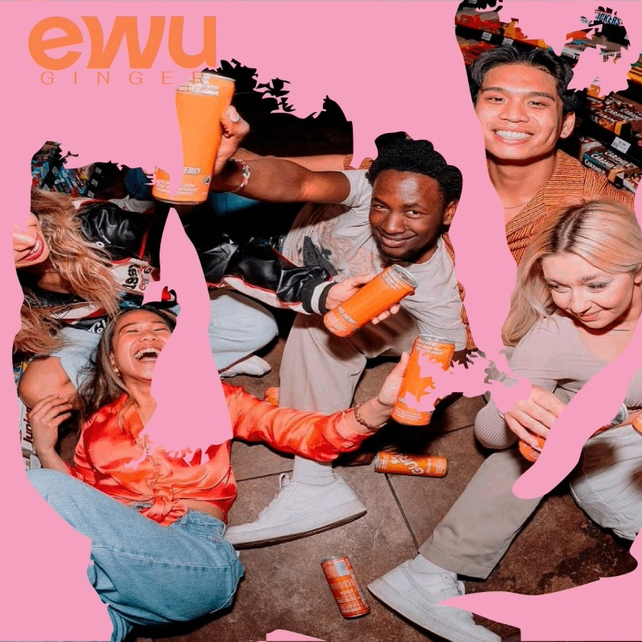

EWU GINGER
Diseño de marca haciendo un nuevo branding con paletas de colores, logo y concepto. Nuestro trabajo representa el lado más artesanal y juvenil de la marca, con diversas variaciones y patrones. La paleta de colores representando: amarillo, color del jengibre. naranjo: picor de la ginger beer. rosado: retrogusto de suavidad.
brandinglogopaleta de colorpatrones






